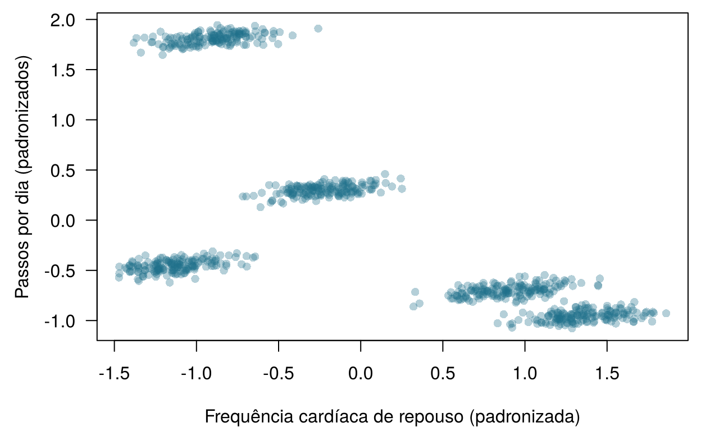
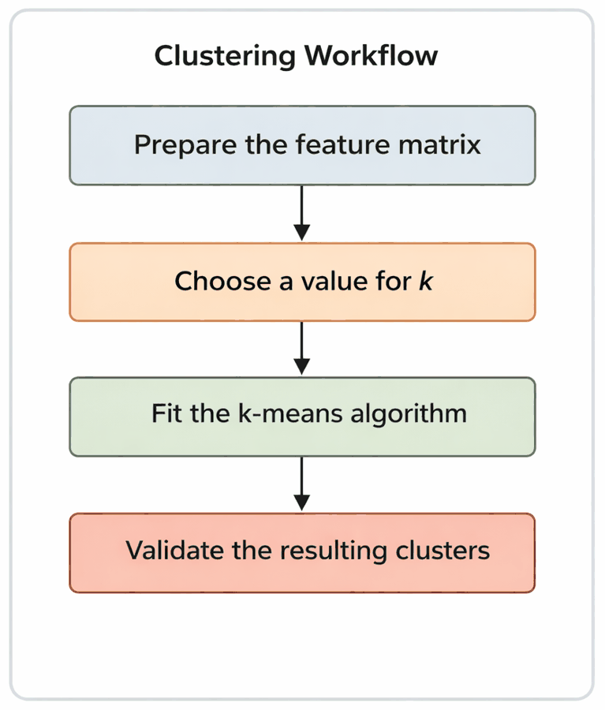
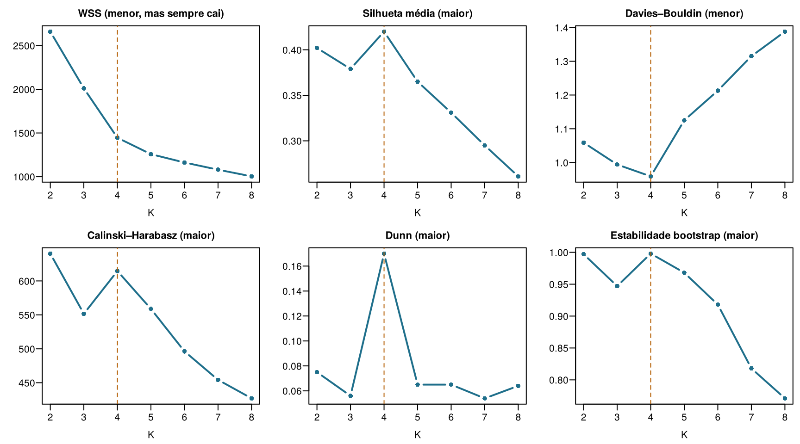
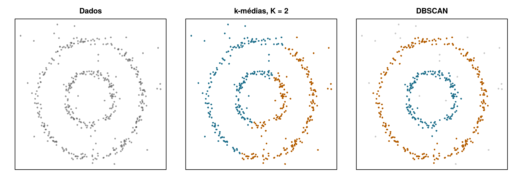
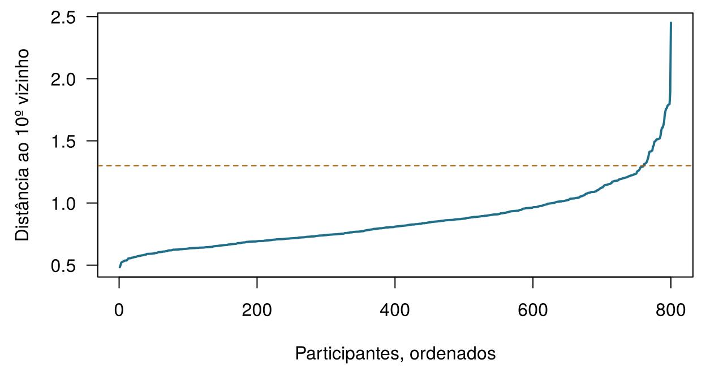
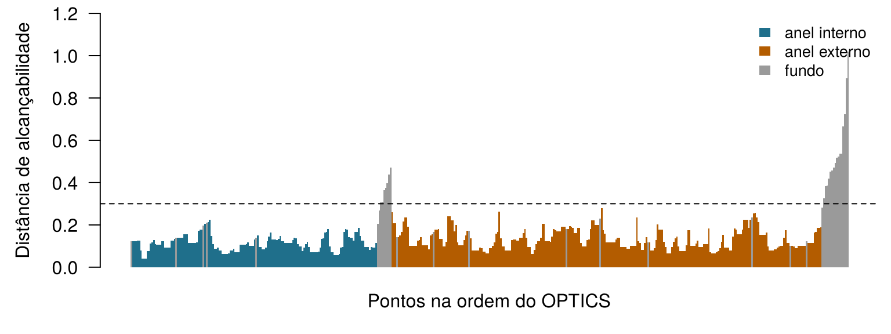
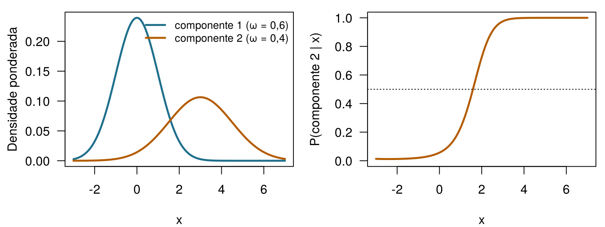

| ID | FC de repouso (bpm) | VFC, SDNN (ms) | Passos/dia | Temp. da pele (°C) | SpO2 (%) | Eficiência do sono | Fenótipo verdadeiro |
|---|---|---|---|---|---|---|---|
| W001 | 62.76 | 80.89 | 11861 | 33.69 | 98.15 | 0.95 | healthy_active |
| W002 | 62.57 | 94.25 | 11992 | 32.25 | 98.14 | 0.92 | healthy_active |
| W003 | 58.01 | 77.88 | 11827 | 32.12 | 98.66 | 1.14 | healthy_active |
| W004 | 55.17 | 77.05 | 11715 | 31.82 | 97.76 | 0.94 | healthy_active |
| W005 | 61.49 | 72.71 | 11917 | 32.25 | 97.82 | 1.00 | healthy_active |
| W006 | 59.90 | 67.43 | 12037 | 31.94 | 98.11 | 0.99 | healthy_active |
11 Agrupando pacientes
O agrupamento é não supervisionado: funciona sem desfechos conhecidos. Para cada pergunta abaixo, decida se ela precisa de rótulos (um desfecho registrado para casos anteriores, como no aprendizado supervisionado) ou se pode ser abordada por agrupamento (sem desfecho algum). Arrisque seu melhor palpite — o capítulo explica a diferença na prática.
| Pergunta | Sua resposta |
|---|---|
| Prever se um participante do HomeBeat terá um evento de deterioração, aprendendo com participantes anteriores cujos eventos foram registrados. | |
| Agrupar 800 usuários de relógio inteligente pelos perfis de seus sinais diários, sem nenhum diagnóstico associado. | |
| Procurar subtipos moleculares entre 60 tumores a partir da expressão de 300 genes. | |
| Estimar a variação da creatinina de Aoife a partir de 1.250 pacientes de UTI anteriores. | |
| Encontrar famílias de lotes da CellWorks com condições de processo parecidas, sem olhar a potência. |
Como usar este capítulo
Começando por aqui?
Este capítulo aproveita algumas ideias dos anteriores:
- Cada linha de um conjunto de dados é uma instância com atributos \(\mathbf{x}_i\) (Definição 1.7). O aprendizado não supervisionado procura estrutura em dados que não têm desfecho (Seção 1.6.2).
- Um modelo flexível demais sofre sobreajuste: ajusta ruído que não vai se repetir em dados novos (Definição 1.8). As configurações escolhidas pelo analista, e não aprendidas, como o \(k\) dos \(k\) vizinhos mais próximos, são hiperparâmetros (Capítulo 3).
- A distribuição normal descreve medições que se espalham simetricamente em torno de uma média, e a verossimilhança mede o quão bem um modelo com determinados parâmetros explica os dados (Capítulo 2).
- A distância \(d(\mathbf{x}_i, \mathbf{x}_{i'})\) entre dois pacientes costuma ser a euclidiana; os atributos são padronizados (centrados e divididos pelo desvio-padrão) para que cada um conte igualmente; a PCA resume muitos atributos correlacionados em poucos eixos novos, os componentes principais, que preservam o máximo possível da variação (Capítulo 10).
- Os registros reais têm valores ausentes, e a forma como eles se perderam importa (Capítulo 9).
| Exemplo | Quem ou o quê | Desfecho | Rostos que você vai conhecer |
|---|---|---|---|
| 1 UTI Ala 7 | 1.250 pacientes de UTI em 4 hospitais | variação da creatinina em 48 h (lesão renal aguda se ≥ 0,3 mg/dL) | Aoife (71 anos, sepse, risco limítrofe), Tomás (54 anos, risco baixo), Priya (38 anos, risco alto); a Dra. Emma Walsh; Seán, o farmacêutico |
| 2 Ensaio ONCO-1 | 1.000 pacientes randomizados para quimioterapia ou não | redução do tumor (%) | pacientes #0042 e #0917 |
| 3 HomeBeat | 500 pessoas que usam um relógio inteligente em casa | escore de estresse, evento de deterioração | Lena |
| 4 CellWorks | 420 lotes de produção de uma terapia celular | escore de potência | lote CW-118 |
Os quatro conjuntos de dados são simulados e podem ser baixados no apêndice de dados. A apresentação completa está na Seção 1.1.
Além do HomeBeat, este capítulo usa dois conjuntos de dados didáticos, descritos nas próprias seções: uma coorte piloto de 800 usuários de relógio inteligente e uma matriz com 300 valores de expressão gênica para 60 pacientes. Ambos são simulados.
Este capítulo trata de encontrar grupos quando ninguém disse a você quais são os grupos. Ele tem dez seções e um Lab, oito verificações rápidas, três widgets “Experimente”, um desafio e três missões de programação em R e Python. Reserve cerca de duas horas. Tudo o que está nos widgets roda no seu navegador; as análises mais lentas foram executadas uma vez e seus resultados são carregados de arquivos.
Notação em resumo (apenas para consulta)
| Símbolo | Significado | Seção |
|---|---|---|
| \(K\) | número de clusters | Seção 11.1 |
| \(C_k\), \(n_k\) | o cluster \(k\) e o número de instâncias nele | Seção 11.1 |
| \(\mathbf{\mu}_k\) | centroide (vetor de médias) do cluster \(k\) | Seção 11.1 |
| \(g_i\) | rótulo de cluster da instância \(i\), um número de 1 a \(K\) | Seção 11.3 |
| WSS, BSS | somas de quadrados intra e entre clusters | Seção 11.3 |
| \(s(i)\) | silhueta da instância \(i\) | Seção 11.4 |
| ARI | índice de Rand ajustado | Seção 11.5 |
| \(r\), minPts | raio da vizinhança no DBSCAN (eps nos softwares) e número mínimo de vizinhos |
Seção 11.6 |
| \(\omega_k\), \(\mathbf{\Sigma}_k\) | proporção de mistura e matriz de covariância do componente \(k\) | Seção 11.7 |
A lista completa está na página de notação. \(K\) é usado apenas para clusters; o número de partições (folds) da validação cruzada é \(V\).
11.1 O que é um cluster?
Definição 11.1 (Cluster e agrupamento) Um cluster é um grupo de instâncias mais parecidas entre si do que com as instâncias de outros grupos, segundo uma medida de similaridade declarada. O agrupamento (clustering) é a tarefa de encontrar esses grupos em dados que não trazem rótulos de desfecho. Uma partição atribui cada instância a exatamente um de \(K\) clusters \(C_1, \dots, C_K\), com \(n_k\) instâncias em \(C_k\).
Repare na expressão segundo uma medida declarada. Não existe uma definição única, independente do método, de um cluster “verdadeiro”: um grupo evidente sob uma noção de similaridade pode desaparecer sob outra (Hennig 2015). Cada método de agrupamento deste capítulo faz a sua própria escolha — grupos arredondados em torno de um centro, regiões densas separadas por regiões esparsas, curvas em forma de sino que se sobrepõem, uma árvore de fusões aninhadas — e encontra grupos daquele tipo.
Os métodos de agrupamento vêm de duas grandes perspectivas. Os métodos planos (de particionamento) procuram uma única partição em um número escolhido de grupos \(K\); o \(k\)-médias (\(k\)-means), o \(k\)-medoides e as misturas gaussianas são desse tipo. Os métodos hierárquicos não se comprometem com um único \(K\): constroem uma árvore de grupos aninhados, desde cada paciente sozinho até todos juntos, que pode ser cortada em qualquer nível. Começamos pelos planos e terminamos com as árvores.
Muitos métodos planos resumem um cluster por um ponto representativo.
Definição 11.2 (Centroide e medoide) O centroide do cluster \(C_k\) é a média dos seus membros, \(\mathbf{\mu}_k = \frac{1}{n_k}\sum_{i \in C_k} \mathbf{x}_i\): a média coordenada a coordenada, um ponto sintético que não precisa coincidir com nenhum paciente real. O medoide é o membro do cluster com a menor distância média a todos os outros membros: sempre um paciente real.
O centroide está para o medoide assim como a média está para a mediana. Uma única leitura defeituosa de um sensor, com 40.000 passos, arrasta o centroide na sua direção; um medoide, ancorado em uma pessoa de verdade, quase não se mexe. Essa robustez explica por que o \(k\)-medoides (Kaufman e Rousseeuw 1990) é popular com dados clínicos bagunçados, a um custo computacional maior.
Você roda um algoritmo de agrupamento no piloto do HomeBeat e pede quatro clusters. Ele devolve quatro grupos. O que você aprendeu?
11.2 A coorte piloto e seus seis sinais
O conjunto de dados do piloto tem uma linha por participante, resumindo várias semanas de dados do relógio.
Os dados foram simulados com cinco fenótipos digitais de 160 pessoas cada: saudável ativo (frequência cardíaca baixa, muitos passos), estresse alto (frequência cardíaca rápida, variabilidade da frequência cardíaca baixa, poucos passos), sedentário calmo (frequência cardíaca lenta, poucos passos), febre ou infecção (pele quente, saturação de oxigênio mais baixa) e pós-operatório (a frequência cardíaca mais rápida e quase nenhum passo). No monitoramento remoto real ninguém conhece os fenótipos, e talvez nem existam. Aqui nós os conhecemos, e isso permite algo raramente possível na prática: verificar o que cada método acerta e erra. A eficiência do sono é a fração do tempo na cama passada dormindo; a simulação deixa alguns valores passarem de 1 (124 dos 800), um lembrete de que dados simulados são um recurso didático, não um espelho da realidade.
11.2.1 Preparando os dados: uma única escala para todos
O agrupamento é guiado pelas distâncias entre pacientes (Capítulo 10). Os passos chegam aos milhares, a temperatura da pele varia alguns graus e a eficiência do sono fica entre 0 e 1. Nas escalas originais, a distância euclidiana entre dois participantes é quase inteiramente uma diferença de passos, e os outros cinco sinais são ignorados. O remédio habitual é padronizar cada atributo para média 0 e desvio-padrão 1 antes de agrupar (Kaufman e Rousseeuw 1990, cap. 1). Tenha em mente que essa é uma escolha de modelagem, não um passo neutro: ela decide quanto cada sinal pode pesar (Hastie, Tibshirani, e Friedman 2009, cap. 14). Veremos isso voltar para nos assombrar.

Você roda o \(k\)-médias nos dados do piloto sem padronizar. Qual sinal vai dominar os clusters?

A Figura 11.2 mostra o fluxo que seguimos. Diferentemente do aprendizado supervisionado, não há desfecho para prever nem erro de teste para relatar, então a última caixa, validar, carrega a maior parte do peso.
11.3 \(k\)-médias
O método de agrupamento mais antigo e mais usado se apoia em uma intuição: se existem grupos, deve haver centros em torno dos quais os pacientes se reúnem. O \(k\)-médias procura \(K\) centroides, e uma atribuição de cada paciente a um deles, que tornem os clusters tão compactos quanto possível. A compacidade é medida pela soma de quadrados intracluster (within-cluster sum of squares),
\[ \text{WSS} = \sum_{k=1}^{K} \sum_{i \in C_k} \lVert \mathbf{x}_i - \mathbf{\mu}_k \rVert^2 , \qquad(11.1)\]
a distância quadrática total de cada paciente ao centroide do seu cluster. O nome remonta a MacQueen (1967); o algoritmo clássico para minimizar a WSS se deve a Lloyd (1982), que o descreveu em 1957 para processamento de sinais.
Definição 11.3 (\(k\)-médias (algoritmo de Lloyd)) Escolha \(K\) e posicione \(K\) centroides iniciais (por exemplo, em \(K\) pacientes escolhidos ao acaso). Depois repita dois passos até que nenhum paciente mude de cluster:
- Atribuir: dê a cada paciente o rótulo \(g_i\) do centroide mais próximo.
- Atualizar: mova cada centroide para a média dos pacientes agora atribuídos a ele.
Nenhum dos passos pode aumentar a WSS, então o algoritmo sempre para, mas em um mínimo local que depende dos centroides iniciais.
Geometricamente, os centroides recortam o espaço de atributos em células de Voronoi: cada célula é a região mais próxima do seu centroide do que de qualquer outro. O passo de atribuição coloca cada paciente na sua célula; o passo de atualização move os centroides, e as paredes das células se movem junto. A convergência é o momento em que as paredes param de se mover. Experimente.
Execute o \(k\)-médias passo a passo. Os pontos são os 800 participantes do piloto, mostrados em dois dos seis sinais (frequência cardíaca padronizada e passos); aqui o \(k\)-médias usa apenas esses dois. Pressione Próximo passo para alternar atribuir e atualizar, veja a WSS cair a cada passo e rode até a convergência. Depois pressione Novo início aleatório, ou mude \(K\), e compare. Ative Colorir pelo fenótipo verdadeiro para ver o que nunca foi dito ao algoritmo. Meta: rodar um início até a convergência.
Vale a pena notar quatro coisas. Os primeiros passos movem muito os centroides, e os últimos quase nada. A WSS nunca sobe. Inícios aleatórios diferentes podem terminar em soluções diferentes, com WSS diferentes: um início ruim pode deixar dois centroides dividindo um mesmo aglomerado enquanto outro centroide fica montado sobre dois. E, com \(K = 5\) e um bom início, a versão com dois sinais separa a faixa de frequência cardíaca alta nos dois fenótipos que as cores verdadeiras revelam (um ARI em torno de 0,9). Guarde essa última observação: com os seis sinais, isso não vai acontecer.
A defesa padrão contra inícios ruins é rodar o algoritmo a partir de muitos inícios e ficar com a solução de menor WSS (nstart = 20 no R, n_init no scikit-learn). Uma inicialização mais esperta, o \(k\)-means++, espalha os centroides iniciais escolhendo cada novo centroide com probabilidade proporcional à sua distância quadrática aos já escolhidos (Arthur e Vassilvitskii 2007). O scikit-learn o usa por padrão; a função kmeans() do R não — ela parte de linhas escolhidas ao acaso.
Três algoritmos, um objetivo: Lloyd, MacQueen e Hartigan–Wong
Os três minimizam a mesma WSS; diferem na forma de mover os centroides (Rhys 2020, cap. 16).
| Algoritmo | Como atualiza | Observações | Na kmeans() do R |
|---|---|---|---|
| Lloyd (em lote) | atribui todos e depois recalcula todos os centroides | simples; é o do widget | algorithm = "Lloyd" |
| MacQueen (online) | depois da primeira passada, visita os pacientes um a um e move imediatamente os dois centroides afetados sempre que um paciente troca de cluster | adequado para dados que chegam em fluxo; depende da ordem das linhas | algorithm = "MacQueen" |
| Hartigan–Wong | move um paciente para outro cluster sempre que isso reduz a WSS total, mesmo que o novo centroide não seja o mais próximo (Hartigan e Wong 1979) | costuma chegar à menor WSS; é o padrão do R | algorithm = "Hartigan-Wong" |
Nos dados do piloto os três dão partições praticamente idênticas, então a escolha do algoritmo importa muito menos do que a escolha de \(K\) e dos atributos.
A variação total dos dados padronizados se divide em duas partes, exatamente como em uma análise de variância:
\[ \underbrace{\sum_{i=1}^{n} \lVert \mathbf{x}_i - \bar{\mathbf{x}} \rVert^2}_{\text{total}} = \underbrace{\sum_{k=1}^{K}\sum_{i \in C_k} \lVert \mathbf{x}_i - \mathbf{\mu}_k \rVert^2}_{\text{WSS}} + \underbrace{\sum_{k=1}^{K} n_k \lVert \mathbf{\mu}_k - \bar{\mathbf{x}} \rVert^2}_{\text{BSS}} , \qquad(11.2)\]
em que \(\bar{\mathbf{x}}\) é a média geral e BSS é a soma de quadrados entre clusters (between-cluster sum of squares). Como o total é fixo, tornar os clusters compactos (WSS pequena) é o mesmo que afastar seus centroides (BSS grande).
Nos seis sinais padronizados, a WSS é 2659,8 com \(K = 2\) e 1004,1 com \(K = 8\). Você deve escolher o \(K\) com a menor WSS?
11.4 Quantos clusters? Índices internos e estabilidade
\(K\) é um hiperparâmetro, e escolhê-lo é a decisão de modelagem central do \(k\)-médias. Clusters de menos levam ao subajuste: estados distintos ficam misturados. Clusters demais levam ao sobreajuste: um grupo genuíno é picado em fragmentos que não reapareceriam em dados novos. Sem rótulos, contamos com dois tipos de evidência.
Definição 11.4 (Índice de validação interna) Um índice interno pontua uma partição usando apenas os dados e os rótulos dos clusters, equilibrando o quanto os clusters são compactos com o quanto são separados. Comparar o índice entre valores de \(K\) sugere qual \(K\) se ajusta melhor aos dados — segundo a noção que o próprio índice tem de um bom cluster.
Quatro índices são de uso comum.
- Silhueta (Rousseeuw 1987). Para o paciente \(i\), seja \(\bar d_{\text{próprio}}(i)\) a distância média aos outros membros do seu cluster e \(\bar d_{\text{vizinho}}(i)\) a distância média aos membros do cluster diferente mais próximo. Então \[ s(i) = \frac{\bar d_{\text{vizinho}}(i) - \bar d_{\text{próprio}}(i)}{\max\{\bar d_{\text{próprio}}(i),\ \bar d_{\text{vizinho}}(i)\}} , \qquad(11.3)\] que fica entre −1 e 1: perto de 1 quando \(i\) está bem acomodado no seu cluster, perto de 0 quando está numa fronteira, negativo quando se encaixaria melhor no vizinho. A silhueta média resume uma partição; quanto maior, melhor.
- Davies–Bouldin (Davies e Bouldin 1979). Para cada cluster, tome a pior razão entre (a sua dispersão
- a dispersão de um vizinho) e a distância entre os seus centroides; depois tire a média entre os clusters. Quanto menor, melhor.
- Calinski–Harabasz (pseudo-F) (Caliński e Harabasz 1974): \(\text{CH} = \dfrac{\text{BSS}/(K-1)}{\text{WSS}/(n-K)}\), a razão no estilo da ANOVA da
- Quanto maior, melhor.
- Dunn (Dunn 1973): a menor distância entre dois pacientes de clusters diferentes dividida pela maior distância entre dois pacientes do mesmo cluster. Olha para o pior caso, então um único valor atípico pode derrubá-lo. Quanto maior, melhor.
Um segundo tipo de evidência é a estabilidade (Hennig 2007): uma estrutura de clusters real deveria reaparecer quando os dados são perturbados. Sorteamos amostras bootstrap dos 800 participantes, rodamos o \(k\)-médias de novo em cada uma, atribuímos todos ao centroide bootstrap mais próximo e medimos a concordância com a partição original (com o índice de Rand ajustado, apresentado na próxima seção; 1 = idênticas). Também é possível aproveitar a lógica da validação cruzada: ajustar os clusters em algumas partições e calcular os índices nos participantes deixados de fora, de modo que \(K\) seja julgado em pessoas que o agrupamento nunca viu (Rhys 2020, cap. 16).

O veredito parece unânime (Figura 11.3). A silhueta tem pico em \(K = 4\), Davies–Bouldin é mínimo em \(K = 4\), Dunn tem pico em \(K = 4\), e a solução com quatro clusters é a mais estável (0,998). Só Calinski–Harabasz discorda, preferindo \(K = 2\), com quatro em segundo lugar, bem perto. Uma analista cuidadosa relataria quatro fenótipos digitais, e teria bons motivos para se sentir confiante.
E estaria errada: os dados foram gerados com cinco.
11.5 Quatro ou cinco? O índice de Rand ajustado
Quando existem rótulos verdadeiros — numa simulação, ou quando os clusters são comparados com uma classificação estabelecida —, podemos medir o quão bem uma partição os recupera. Os números dos clusters são arbitrários (o cluster 2 de uma execução pode ser o cluster 4 da seguinte), então não dá para simplesmente contar os rótulos coincidentes. Em vez disso, olhamos para pares de pacientes: uma boa partição junta os pares que devem estar juntos e separa os que não devem.
Definição 11.5 (Índice de Rand ajustado (ARI)) Considere todos os \(\binom{n}{2}\) pares de instâncias. O índice de Rand é a proporção de pares em que duas partições concordam (ambas juntam o par, ou ambas o mantêm separado). O índice de Rand ajustado (adjusted Rand index) o corrige pela concordância esperada ao acaso (Hubert e Arabie 1985): \[ \text{ARI} = \frac{\text{índice de Rand} - \text{índice de Rand esperado}}{\text{índice de Rand máximo} - \text{índice de Rand esperado}} . \] ARI = 1 para partições idênticas (sejam quais forem os nomes dos rótulos), cerca de 0 para uma partição que não é melhor do que o acaso, e ele pode ser ligeiramente negativo.
Aqui está a solução com quatro clusters comparada com a verdade.
| cluster | saudável ativo | estresse alto | pós-operatório | sedentário calmo | febre/infecção |
|---|---|---|---|---|---|
| 1 | 160 | 0 | 0 | 0 | 0 |
| 2 | 0 | 158 | 160 | 0 | 0 |
| 3 | 0 | 2 | 0 | 160 | 0 |
| 4 | 0 | 0 | 0 | 0 | 160 |
Três fenótipos saem limpos. Os participantes com estresse alto e os pós-operatórios, ambos com frequência cardíaca rápida e poucos passos, acabam num grande cluster único. O ARI é 0,779. Certamente dizer ao \(k\)-médias o número certo resolve isso?
| cluster | saudável ativo | estresse alto | pós-operatório | sedentário calmo | febre/infecção |
|---|---|---|---|---|---|
| 1 | 160 | 0 | 0 | 0 | 0 |
| 2 | 0 | 110 | 87 | 0 | 0 |
| 3 | 0 | 0 | 0 | 159 | 0 |
| 4 | 0 | 0 | 0 | 0 | 159 |
| 5 | 0 | 50 | 73 | 1 | 1 |
Não resolve (Tabela 11.3). Com \(K = 5\) o grupo fundido é dividido, mas pela linha errada: cada um dos dois clusters resultantes é uma mistura dos dois fenótipos, e o ARI cai para 0,750. Não é azar com os inícios: a partição nos cinco fenótipos verdadeiros tem uma WSS de 1381,3, maior do que os 1257,8 da solução do \(k\)-médias. Pela régua do próprio \(k\)-médias, a verdade é uma resposta pior.
Por quê? Veja o quanto cada fenótipo está espalhado em cada sinal padronizado (o desvio-padrão médio dentro de cada fenótipo; a coorte inteira tem 1 em todos os sinais):
| Sinal | DP dentro do fenótipo | |
|---|---|---|
| HR_mean | FC de repouso | 0.199 |
| HRV_sdnn | VFC | 0.448 |
| steps_mean | Passos | 0.056 |
| skin_temp | Temperatura da pele | 0.633 |
| spo2 | SpO2 | 0.552 |
| sleep_eff | Eficiência do sono | 0.884 |
Os fenótipos são “panquecas” achatadas: finíssimos nos passos (0,056) e largos na eficiência do sono (0,884). Os grupos de estresse alto e pós-operatório diferem sobretudo nos passos — cerca de 1.000 por dia, uma distância enorme em relação à dispersão de cada um, mas pequena depois da padronização pela dispersão da coorte inteira. O \(k\)-médias pressupõe clusters redondos de tamanho parecido e corta onde as nuvens são mais largas, não onde está a separação real. No widget, só com frequência cardíaca e passos, a separação era visível e o \(k\)-médias a encontrou; os quatro sinais extras, largos dentro de todos os fenótipos e sem informação sobre esses dois grupos, acrescentam dispersão em outras direções, que a encobre. Escolher quais atributos entram na distância é uma decisão de modelagem tanto quanto escolher \(K\). Os índices internos compartilham a geometria do \(k\)-médias, então concordaram entre si — e com o erro dele.
A lição
Os índices internos e a estabilidade medem o quão bem os dados se ajustam à ideia que o próprio método tem de um cluster. Eles não podem dizer se os clusters são reais. Quatro índices concordantes e uma solução estável somaram uma resposta confiante, reprodutível e errada. Daí vêm dois remédios, e o restante do capítulo usa ambos: experimentar métodos com noções diferentes de cluster e, acima de tudo, validar os clusters com conhecimento que o algoritmo não viu.
Um colega agrupa 100 pacientes em três grupos rotulados 1, 2, 3. Os subtipos verdadeiros são A, B, C, e todo paciente A está no cluster 3, todo B no cluster 1 e todo C no cluster 2. Qual é o ARI?
Dê ao \(k\)-médias o número verdadeiro. Os dados do piloto estão carregados como wear, com os nomes dos seis sinais em vars, e há uma função ari() que calcula o índice de Rand ajustado. Padronize os sinais, rode o \(k\)-médias com o número verdadeiro de fenótipos e meça a concordância com os fenótipos verdadeiros.
Os dados foram simulados com cinco fenótipos de 160 pessoas cada.
km <- kmeans(X, centers = 5, nstart = 20)Os dados foram simulados com cinco fenótipos de 160 pessoas cada.
km = KMeans(n_clusters=5, n_init=20, random_state=2025).fit(X)Em dados reais não há coluna phenotype_true. O que nos teria alertado? Olhar cada sinal na sua própria escala (um histograma dos passos entre os participantes com frequência cardíaca rápida mostra duas corcovas separadas); perguntar aos clínicos se “frequência cardíaca rápida, nenhum passo” mistura pessoas que deveriam ser manejadas de forma diferente; e ajustar um método cujos clusters possam ser alongados, o que fazemos na Seção 11.7.
11.5.1 Pontos fortes e limites do \(k\)-médias
O \(k\)-médias é rápido, escala para milhões de linhas, é fácil de explicar, e seus centroides são resumos legíveis: um centroide a +1,8 desvio-padrão nos passos e −0,9 na frequência cardíaca é o perfil saudável ativo. Seus limites decorrem do seu objetivo. Ele precisa de \(K\) de antemão; só funciona com atributos numéricos (categorias como tipo de dispositivo ou diagnóstico exigem outros métodos, como o \(k\)-medoides com uma dissimilaridade adequada); depende da escala; seu resultado depende dos inícios; alguns valores atípicos puxam os centroides para longe; e ele favorece clusters redondos de tamanho parecido. Além disso, atribui todo paciente a algum cluster, por mais incomum que o paciente seja.
11.6 Agrupamento baseado em densidade: DBSCAN e OPTICS
Os métodos baseados em densidade adotam outro ponto de vista: um cluster é uma região onde os pacientes estão aglomerados, separada de outras regiões assim por espaço esparso. Os clusters podem então ter qualquer forma, e um paciente que vive numa região vazia não precisa pertencer a cluster nenhum. No monitoramento remoto, muitas vezes é exatamente isso que queremos: um episódio incomum ou um sensor com defeito deve ser sinalizado, e não forçado para dentro do grupo mais próximo.
Definição 11.6 (DBSCAN) O DBSCAN (density-based spatial clustering of applications with noise, agrupamento espacial baseado em densidade de aplicações com ruído) (Ester et al. 1996) usa dois hiperparâmetros, um raio \(r\) (chamado eps nos softwares) e uma contagem minPts. Um ponto núcleo (core point) tem pelo menos minPts pontos, incluindo ele mesmo, a uma distância de até \(r\). Um ponto de borda tem menos, mas está a até \(r\) de um ponto núcleo. Todos os outros pontos são ruído. Um cluster cresce a partir de um ponto núcleo acrescentando tudo o que está a até \(r\) dele, depois tudo o que está a até \(r\) de cada novo ponto núcleo, e assim por diante, até que nada mais possa ser alcançado.
A demonstração clássica usa formas que derrotam o \(k\)-médias. Abaixo, 150 pontos formam um anel interno, 260 um anel externo, e 40 estão espalhados ao acaso.

O \(k\)-médias corta o plano em duas metades, cada uma com pedaços dos dois anéis (ARI nos pontos dos anéis de 0,008, nada melhor do que o acaso). O DBSCAN acompanha os anéis, porque os pontos vizinhos ao longo de um anel vão passando o cluster adiante, e deixa 21 dos pontos espalhados como ruído. Agora encontre você mesmo boas configurações.
Ajuste o DBSCAN à mão. Mova o raio \(r\) e o minPts. As cruzes cinza são ruído; os círculos vazados são pontos de borda. Veja o que acontece quando \(r\) é pequeno demais (os anéis se estilhaçam em fragmentos, e muita coisa vira ruído) e grande demais (os anéis se fundem entre si e com o fundo). Meta: exatamente dois clusters que recuperem os dois anéis (ARI nos pontos dos anéis ≥ 0,95).
11.6.1 Escolhendo \(r\) e minPts
Dois hábitos ajudam. Primeiro, padronize os atributos, para que um mesmo raio signifique a mesma coisa em todas as direções. Segundo, fixe o minPts (valores entre 5 e 15 são comuns; maiores para dados maiores ou de dimensão mais alta) e desenhe um gráfico de distâncias ao \(k\)-ésimo vizinho mais próximo: para cada paciente, a distância ao seu minPts-ésimo vizinho mais próximo, ordenada da menor para a maior. Pacientes dentro de regiões densas têm valores pequenos, pacientes em regiões esparsas têm valores grandes, e o “cotovelo” onde a curva se volta para cima sugere um raio (Ester et al. 1996; Hahsler, Piekenbrock, e Doran 2019). Em muitas dimensões todas as distâncias ficam parecidas (Capítulo 10), a densidade é difícil de estimar e o DBSCAN se torna frágil.

Calcule você mesmo as distâncias ao \(k\)-ésimo vizinho mais próximo. X contém os seis sinais padronizados e d a matriz de distâncias entre todos os pares de participantes. Para cada participante, pegue a distância ao seu 10º vizinho mais próximo e depois informe o percentil 95 dessas distâncias. Cuidado: todo participante está a distância 0 de si mesmo.
sort(row)[1] é sempre 0: a distância do participante a si mesmo.
knn10 <- apply(d, 1, function(row) sort(row)[11])A coluna 0 de cada linha ordenada é 0 (o próprio participante), e o Python conta a partir de 0.
knn10 = np.sort(d, axis=1)[:, 10]Como o DBSCAN se sai na coorte piloto? A Tabela 11.5 o roda nos seis sinais padronizados com minPts = 10 e vários raios.
| Raio r | Clusters | Pontos de ruído | ARI com a verdade |
|---|---|---|---|
| 0.6 | 8 | 527 | 0.060 |
| 0.8 | 4 | 152 | 0.562 |
| 1.0 | 4 | 32 | 0.739 |
| 1.1 | 4 | 16 | 0.761 |
| 1.2 | 4 | 11 | 0.769 |
| 1.3 | 4 | 3 | 0.778 |
| 1.4 | 2 | 3 | 0.209 |
| 1.5 | 2 | 2 | 0.209 |
| 1.6 | 2 | 0 | 0.210 |
Raios pequenos deixam centenas de participantes como ruído. Perto do cotovelo (\(r\) de 1,1 a 1,3), o DBSCAN encontra quatro clusters, com um punhado de pontos de ruído e um ARI de cerca de 0,78; um raio maior funde mais grupos. Aqui o DBSCAN tem o mesmo ponto cego do \(k\)-médias, por um motivo diferente: os participantes com estresse alto e os pós-operatórios estão ligados por uma cadeia ininterrupta de vizinhanças densas, então a densidade não consegue separá-los. Os poucos pontos de ruído, porém, são um bônus genuíno: são os participantes que merecem uma segunda olhada.
11.6.2 OPTICS: densidade em várias escalas
O DBSCAN usa um único raio em toda parte, mas os clusters reais muitas vezes diferem em densidade: um grupo pós-operatório compacto ao lado de um grupo sedentário difuso. O OPTICS (ordering points to identify the clustering structure, ordenar pontos para identificar a estrutura de agrupamento) (Ankerst et al. 1999) evita se comprometer com um único raio. Ele visita os pontos numa ordem que mantém juntas as vizinhanças densas e registra, para cada ponto, uma distância de alcançabilidade (reachability distance): grosso modo, o quão grande \(r\) teria de ser para que esse ponto fosse alcançado a partir dos pontos visitados antes dele. Plotados na ordem de visita, os clusters densos aparecem como vales e as regiões esparsas como picos (Figura 11.7). Cortar o gráfico com uma linha horizontal na altura \(r\) recupera o agrupamento do DBSCAN com esse raio; uma única ordenação serve para todos os raios de uma vez.

Na coorte piloto, o OPTICS com minPts = 10, cortado em \(r = 1{,}3\), dá novamente 4 clusters e 3 pontos de ruído: nenhuma surpresa, já que o corte reproduz o DBSCAN com esse raio. O valor dele está no próprio gráfico, que mostra num relance se os dados têm uma única escala natural de densidade ou várias.
O DBSCAN rotula 16 dos 800 participantes do piloto como ruído. O que as enfermeiras devem fazer com eles?
11.7 Misturas gaussianas: clusters suaves
Até agora, todo paciente pertenceu a exatamente um cluster, sem meios-tons: é o agrupamento rígido (hard clustering). A fisiologia raramente é tão arrumada. Um participante pode estar entre “estresse alto” e “pós-operatório”, e seria mais honesto dizer 70 % um, 30 % o outro. Os modelos de mistura tornam isso possível ao tratar os dados como gerados por várias distribuições de probabilidade que se sobrepõem, uma por cluster.
Definição 11.7 (Modelo de mistura gaussiana (GMM)) Um modelo de mistura gaussiana pressupõe que cada instância vem de um de \(K\) componentes, sendo o componente \(k\) escolhido com probabilidade \(\omega_k\) (as proporções de mistura, que somam 1) e gerando \(\mathbf{x}\) a partir de uma distribuição normal multivariada com média \(\mathbf{\mu}_k\) e matriz de covariância \(\mathbf{\Sigma}_k\): \[ p(\mathbf{x}) = \sum_{k=1}^{K} \omega_k \, \mathcal{N}(\mathbf{x} \mid \mathbf{\mu}_k, \mathbf{\Sigma}_k) . \qquad(11.4)\] A média é o centro do componente; a matriz de covariância define sua forma (redonda ou alongada), sua orientação e seu volume.
Definição 11.8 (Atribuição suave) Para cada instância, um modelo de mistura dá a probabilidade a posteriori de pertencimento \(P(g_i = k \mid \mathbf{x}_i)\) para cada componente \(k\) — o teorema de Bayes (Capítulo 2) com os \(\omega_k\) como prioris e as densidades normais como verossimilhanças. Atribuir cada instância ao seu componente mais provável dá uma partição rígida; \(1 - \max_k P(g_i = k \mid \mathbf{x}_i)\) mede o quão incerta é essa atribuição.

Os parâmetros são estimados por máxima verossimilhança com o algoritmo EM (Dempster, Laird, e Rubin 1977), que se parece notavelmente com o \(k\)-médias:
- Passo E (esperança): com os parâmetros atuais, calcule as probabilidades de pertencimento de cada paciente — um passo de atribuição suave.
- Passo M (maximização): reestime \(\omega_k\), \(\mathbf{\mu}_k\) e \(\mathbf{\Sigma}_k\) de cada componente, ponderando cada paciente pela sua probabilidade de pertencimento — um passo de atualização ponderado.
Os dois passos se repetem até que a verossimilhança pare de aumentar. Assim como o \(k\)-médias, o EM pode parar num ótimo local, então usam-se vários inícios. Na verdade, o \(k\)-médias é um caso limite de um GMM em que todos os componentes são redondos, com a mesma variância, cada vez menor, e as atribuições são rígidas (Hastie, Tibshirani, e Friedman 2009, sec. 14.3.7).
| \(k\)-médias | Mistura gaussiana | |
|---|---|---|
| Atribuição | rígida | suave (probabilidades) |
| Forma do cluster | redonda, de tamanho parecido | elíptica; forma, tamanho e orientação podem diferir |
| Objetivo | minimizar a WSS | maximizar a verossimilhança |
| Incerteza da atribuição de um paciente | não disponível | probabilidades a posteriori |
| Escolha de \(K\) | índices internos, estabilidade | os mesmos, ou um critério de informação como o BIC |
Quão flexíveis devem ser as matrizes de covariância? O pacote mclust do R (Scrucca et al. 2016) nomeia as opções com três letras, para volume, forma e orientação: EII significa componentes esféricos de mesmo tamanho (a geometria do \(k\)-médias), VII esféricos de tamanho variável, EEE elipsoides que compartilham a mesma matriz de covariância e VVV uma matriz de covariância livre para cada componente. Cada combinação de modelo e \(K\) é pontuada pelo critério de informação bayesiano (BIC) (Schwarz 1978), que recompensa a verossimilhança e penaliza o número de parâmetros; na convenção do mclust, BIC maior é melhor.
| Componentes | EII (redondos, iguais) | VII (redondos, variáveis) | EEE (elipsoide comum) | VVV (livre) |
|---|---|---|---|---|
| 2 | -11922.5 | -12204.6 | -10316.5 | -9075.8 |
| 3 | -11257.3 | -11032.9 | -9448.2 | -7752.6 |
| 4 | -10175.7 | -10176.5 | -6588.8 | -6343.2 |
| 5 | -9918.7 | -9933.9 | -5713.7 | -6470.8 |
| 6 | -9876.6 | -9861.5 | -5747.7 | -6666.3 |
| 7 | -9716.4 | -9703.5 | -5776.1 | -6799.0 |
| 8 | -9583.0 | -9586.1 | -5809.6 | -6934.1 |
O BIC escolhe 5 componentes com uma covariância elipsoidal comum (EEE) — que é, de fato, exatamente como os dados foram simulados: cinco grupos, uma matriz de covariância comum. Sua partição recupera os cinco fenótipos com um ARI de 0,997 (Tabela 11.8). Os modelos redondos (EII, VII), a geometria do \(k\)-médias, pontuam muito pior em todos os \(K\). O GMM tem sucesso porque consegue aprender que os fenótipos são finos nos passos e largos na eficiência do sono, e assim os separa pela fronteira real.
| cluster | saudável ativo | estresse alto | pós-operatório | sedentário calmo | febre/infecção |
|---|---|---|---|---|---|
| 1 | 160 | 0 | 0 | 0 | 0 |
| 2 | 0 | 160 | 1 | 0 | 0 |
| 3 | 0 | 0 | 159 | 0 | 0 |
| 4 | 0 | 0 | 0 | 160 | 0 |
| 5 | 0 | 0 | 0 | 0 | 160 |
As probabilidades de pertencimento estão quase todas perto de 0 ou de 1: só 1 participante tem incerteza de atribuição acima de 0,1. Isso acontece porque os fenótipos simulados, uma vez modelada corretamente a sua forma, quase não se sobrepõem. Encontraremos um conjunto de dados em que o pertencimento suave importa muito mais na Seção 11.9.
As misturas têm seus próprios custos. Uma matriz de covariância livre por componente exige muitos parâmetros (21 por componente com seis atributos), então o VVV sofre sobreajuste facilmente em amostras pequenas; o EM pode convergir devagar ou para ótimos locais ruins; e os clusters só são tão bons quanto o pressuposto de normalidade.
Para uma participante, um GMM dá probabilidades de pertencimento de 0,55 (estresse alto) e 0,45 (pós-operatório). Qual é a melhor leitura?
11.8 Agrupamento hierárquico de perfis de expressão gênica
O agrupamento hierárquico nem pede \(K\). Ele constrói uma família inteira de partições aninhadas e as mostra como uma árvore. Nós o usamos em outro tipo de dado, típico da medicina molecular: a expressão de 300 genes em amostras tumorais de 60 pacientes. Os dados foram simulados com três programas moleculares de 20 pacientes cada — com predomínio de interferon (A_IFN), com predomínio inflamatório (B_Inflam) e metabólico (C_Metab) — e, como antes, deixamos o subtipo verdadeiro de lado para conferir o resultado. Agrupar pacientes por perfis de expressão é a forma como muitos subtipos moleculares de câncer foram propostos pela primeira vez (Eisen et al. 1998; Perou et al. 2000).
Definição 11.9 (Agrupamento hierárquico aglomerativo e dendrograma) O agrupamento hierárquico aglomerativo começa com cada instância como um cluster próprio e funde repetidamente os dois clusters mais próximos até restar um só. A sequência de fusões é desenhada como um dendrograma: uma árvore cujas folhas são as instâncias e em que a altura de cada junção é a distância entre os dois clusters que ela fundiu. Cortar a árvore numa altura \(h\) dá uma partição: os ramos que atravessam o corte são os clusters.
Duas escolhas determinam o resultado. A primeira é a distância entre pacientes: a distância euclidiana em genes padronizados compara níveis gerais; uma distância de correlação, \(1 - \rho_{ii'}\), com \(\rho_{ii'}\) a correlação entre os perfis dos dois pacientes, compara padrões de regulação para cima e para baixo independentemente do nível, e é popular em ômicas. A segunda é a ligação (linkage): como medir a distância entre dois clusters quando eles já contêm vários pacientes (Hastie, Tibshirani, e Friedman 2009, sec. 14.3.12).
| Ligação | Distância entre dois clusters | Tende a dar |
|---|---|---|
| Simples | o par de membros mais próximo | cadeias longas e desgarradas |
| Completa | o par de membros mais distante | clusters compactos, de diâmetro parecido |
| Média | a média sobre todos os pares | um meio-termo |
| Ward | o aumento da WSS total causado pela fusão (Ward 1963) | clusters compactos e equilibrados; um padrão comum |
Os métodos divisivos funcionam ao contrário, começando com todos juntos e dividindo recursivamente; o DIANA é o exemplo clássico (Kaufman e Rousseeuw 1990). São mais lentos, mas podem expor primeiro a divisão dominante. Explore a árvore.
Corte a árvore. O dendrograma mostra o agrupamento de Ward dos 60 pacientes (300 genes padronizados). Abaixo das folhas, a fileira de cima mostra os clusters dados pelo seu corte, e a de baixo o subtipo molecular verdadeiro. Arraste a altura do corte. Meta: encontrar um corte cujos clusters coincidam perfeitamente com os subtipos (ARI = 1).
Leia um dendrograma de baixo para cima. Pacientes unidos lá embaixo têm perfis muito parecidos; uma junção lá no alto une grupos que diferem muito. A pista mais útil para o número de clusters é um longo intervalo vertical entre fusões sucessivas: aqui as últimas fusões acontecem nas alturas 118,9, 92,6, 32,5 e depois 25,9, então qualquer corte na faixa larga entre 32,5 e 92,6 dá três clusters, e esses três são exatamente os três subtipos.
| Ligação | ARI, K = 2 | K = 3 | K = 4 | K = 5 | Silhueta, K = 3 |
|---|---|---|---|---|---|
| ward.D2 | 0.563 | 1.000 | 0.866 | 0.718 | 0.413 |
| complete | 0.563 | 1.000 | 0.866 | 0.718 | 0.413 |
| average | 0.563 | 1.000 | 0.887 | 0.860 | 0.413 |
| single | 0.563 | 1.000 | 0.975 | 0.951 | 0.413 |
| correlação + average | 0.539 | 0.950 | 0.975 | 0.951 | — |
Os dados genômicos são um caso fácil. Todas as ligações euclidianas recuperam perfeitamente os três subtipos em \(K = 3\), a silhueta média é máxima com três clusters para todas elas, e a distância de correlação chega perto (Tabela 11.10). Ao contrário da coorte piloto, aqui a evidência interna e a verdade concordam. Casos fáceis existem; o problema é que, sem rótulos, não dá para distinguir um caso fácil de um enganoso olhando apenas para os índices.

Num dendrograma de pacientes, dois pacientes são unidos na altura 3 e dois grupos de pacientes são unidos na altura 90. O que as alturas dizem?
Corte a árvore no código. A matriz de expressão 60 × 300 está carregada como gen (colunas patient_id, subtype e depois os genes), com a função ari(). O código padroniza os genes e constrói uma árvore de Ward. Escolha o número de clusters em que cortá-la para que os clusters reproduzam os três subtipos moleculares.
Foram simulados três programas: interferon, inflamatório e metabólico.
cl <- cutree(hc, k = 3)Foram simulados três programas: interferon, inflamatório e metabólico.
cl = fcluster(Z, t=3, criterion="maxclust")Um dendrograma de aparência convincente ainda pode ser frágil, sobretudo quando há muito mais genes do que pacientes. A estabilidade bootstrap também se aplica aqui: reamostre os pacientes, reconstrua a árvore e verifique com que frequência cada cluster reaparece; clusters que reaparecem em menos de cerca de 60–70 % das vezes merecem desconfiança (Hennig 2007).
Qual método se encaixa melhor em cada situação?
- Um milhão de resumos diários de relógio; você quer uma partição rápida num número dado de perfis compactos. k-médias
- Você quer grupos de qualquer forma, e os dias atípicos devem ficar fora de todos os grupos e ser sinalizados. DBSCAN
- Os fenótipos se sobrepõem, e as enfermeiras querem, para cada participante, a probabilidade de pertencer a cada grupo. Mistura gaussiana
- Sessenta tumores; você quer ver como os subtipos se dividem em subgrupos mais finos, sem fixar o número de antemão. Hierárquico
- Os grupos são alongados e inclinados, de tamanhos diferentes, e você gostaria de um critério de informação para escolher quantos são. Mistura gaussiana
- Células ao longo de duas trajetórias curvas, em forma de anel, com detritos espalhados entre elas. DBSCAN
11.9 De volta ao HomeBeat: clusters, contínuos e Lena
Volte ao ensaio principal do HomeBeat: 500 participantes com quatro sinais do relógio (frequência cardíaca de repouso, variabilidade da frequência cardíaca, temperatura da pele, atividade) e, ao contrário do piloto, um desfecho registrado: se ocorreu um evento de deterioração. Peça ao \(k\)-médias três clusters dos sinais padronizados e ele atende (Tabela 11.11).
| Cluster | n | FC de repouso | VFC | Temp. da pele | Atividade | Idade | Taxa de eventos |
|---|---|---|---|---|---|---|---|
| 1 | 164 | 57.0 | 64.6 | 33.61 | 47.3 | 31.5 | 0.555 |
| 2 | 191 | 70.4 | 39.6 | 34.55 | 39.2 | 50.9 | 0.921 |
| 3 | 145 | 83.9 | 20.4 | 35.41 | 29.0 | 67.5 | 1.000 |
Os três clusters são arrumados e legíveis — calmo e ativo, intermediário, frequência cardíaca rápida com variabilidade baixa —, e suas taxas de eventos sobem de 56% para 100%. Antes de chamá-los de fenótipos, considere mais dois fatos. A silhueta média é baixa e simplesmente cai à medida que \(K\) cresce (0,404 em \(K = 2\), 0,298 em \(K = 3\), 0,219 em \(K = 6\)): não existe um \(K\) em que os dados “se encaixem” em grupos. E os clusters se alinham com a idade (média de 31,5, 50,9 e 67,5 anos): dividir os participantes em terços de idade, sem agrupamento nenhum, dá taxas de eventos de 63%, 86% e 100%, praticamente as mesmas. Na simulação que gerou o HomeBeat, os sinais variam suavemente com a idade, a fragilidade e a inflamação; não há tipos a encontrar. Os clusters são fatias de um contínuo. Isso não é inútil — fatias podem ser convenientes para o planejamento —, mas é uma afirmação diferente de “existem três tipos de paciente”. Uma mistura gaussiana com três componentes diz a mesma coisa à sua maneira: para 62% dos participantes, nenhum componente tem probabilidade de pertencimento acima de 0,8.
Os clusters ainda podem servir a participantes individuais. Quando Lena, a participante do HomeBeat cujo relógio para de enviar dados, tem lacunas no seu registro (Capítulo 9), podemos situá-la em relação aos clusters usando apenas os sinais que chegaram: calculamos a distância dela a cada centroide sobre os atributos disponíveis e escolhemos o mais próximo. No arquivo do HomeBeat com valores ausentes, 134 participantes não têm um ou mais sinais (em média 1,15). Situados dessa forma, 87% deles caem no mesmo cluster que com os dados completos. É uma forma rápida e transparente de usar um registro incompleto, com sua taxa de erro declarada, e não um substituto para os métodos fundamentados do Capítulo 9.
11.9.1 Clusters são hipóteses
A mesma história já aconteceu na pesquisa clínica. Ahlqvist et al. (2018) agruparam 8.980 adultos com diabetes recém-diagnosticado da coorte sueca ANDIS com base em seis variáveis — anticorpos anti-GAD, idade ao diagnóstico, índice de massa corporal, HbA1c e estimativas da função das células β e da resistência à insulina —, usando \(k\)-médias e agrupamento hierárquico. Eles propuseram cinco subgrupos, desde o diabetes autoimune grave e o diabetes grave por deficiência de insulina até o diabetes leve relacionado à idade, que diferiam nas complicações posteriores (por exemplo, um risco maior de doença renal no grupo grave com resistência à insulina) e foram reproduzidos em outras coortes. O artigo foi influente e também provocou uma resposta cuidadosa: em dados de ensaios clínicos, modelos que usavam atributos clínicos contínuos simples, como a idade ao diagnóstico e o IMC, previram a progressão da doença e a resposta ao tratamento melhor do que o pertencimento aos clusters (Dennis et al. 2019). Subgrupos discretos impostos a um contínuo podem ser rótulos úteis e, ainda assim, perder informação.
A lição se generaliza. Um resultado de agrupamento é uma hipótese sobre a estrutura. Ele conquista confiança em etapas: é estável sob reamostragem; é reproduzido numa coorte independente; difere em desfechos que não foram usados para construí-lo (validação externa); e, antes de orientar o cuidado, tratar os pacientes de forma diferente conforme o cluster melhora os desfechos em comparação com o que fazemos hoje. A maioria dos clusters publicados para na primeira ou na segunda etapa.
Uma equipe agrupa pacientes com diabetes tipo 2 em quatro grupos e propõe um medicamento de primeira linha diferente para cada um. Que evidência você gostaria de ter antes de adotar essa política?
11.10 Onde isso se encaixa no ciclo de decisão
O agrupamento ocupa um lugar incomum no ciclo. Um modelo preditivo responde a uma pergunta que alguém fez (Aoife vai desenvolver LRA?); um método de agrupamento propõe um enquadramento — uma forma de recortar uma população em grupos — que as pessoas podem então adotar para decidir: quais participantes recebem uma ligação de acompanhamento, quais tumores são tratados como uma única doença. Isso o torna poderoso e arriscado ao mesmo tempo. As enfermeiras podem usar os clusters do piloto, os pertencimentos suaves e as sinalizações de ruído como informação para planejar as ligações, desde que tratem cada cluster como uma hipótese, mantenham à vista os participantes atípicos e ambíguos em vez de escondê-los atrás de um rótulo, e verifiquem, com os eventos posteriores, se os grupos de fato diferem naquilo que importa. O que pode dar errado? O algoritmo sempre devolve grupos (Seção 11.1); os índices internos podem concordar com uma resposta errada (Seção 11.5); a escala decide quais sinais contam (Seção 11.2); e os clusters podem ser fatias de um contínuo que uma variável simples explica igualmente bem (Seção 11.9). Quem continua no controle? Os clínicos, que decidem se um grupo proposto é clinicamente significativo, e os pacientes, cujos desfechos são o teste final.
11.11 Lab: fenótipos a partir de sinais do relógio
O Lab reúne as análises do capítulo num único script. Execute-o aqui ou baixe-o e rode no seu computador: ch11_lab.pt.R · ch11_lab.pt.py. A versão em R usa o R base e o pacote cluster (Maechler et al. 2023); as partes de DBSCAN e de mistura gaussiana só rodam onde os pacotes dbscan e mclust estiverem instalados (no seu computador, não no navegador). A versão em Python usa scikit-learn (Pedregosa et al. 2011) e SciPy (Virtanen et al. 2020) do início ao fim.
Três resultados para levar adiante. A silhueta aponta para quatro clusters, enquanto o ARI mostra que nem quatro nem cinco clusters do \(k\)-médias recuperam os cinco fenótipos; a mistura gaussiana com covariância comum recupera. Os subtipos genômicos, por outro lado, são recuperados por uma simples árvore de Ward. E os clusters do HomeBeat acompanham a idade, um lembrete de comparar qualquer agrupamento com a explicação mais simples disponível.
11.12 Exercícios
- Escalas originais. Rode de novo o \(k\)-médias do Lab com \(K = 4\) sem padronizar. Qual sinal comanda os clusters? Compare o ARI com o da versão padronizada.
- A escala como escolha. Padronize os sinais do piloto e depois multiplique a coluna de passos por 3, e separadamente por 10, antes de rodar o \(k\)-médias com \(K = 5\). O que acontece com o ARI, e por quê? O que isso diz sobre quem decide quanto um atributo deve pesar?
- Os inícios importam. Rode o \(k\)-médias com \(K = 5\) e
nstart = 1para dez sementes diferentes. Anote a WSS e o ARI de cada vez. A menor WSS é também o maior ARI? - Os índices discordam. O Calinski–Harabasz preferiu \(K = 2\) no piloto. Usando a 1, explique por que esse índice tende a favorecer poucos clusters grandes quando um grupo está longe de todos os outros.
- DBSCAN na prática. Para minPts = 5 e 20, desenhe o gráfico de distâncias ao \(k\)-ésimo vizinho mais próximo para os dados do piloto e escolha um raio no cotovelo. Os clusters mudam?
- Ligação. Na matriz genômica, compare a ligação simples e a de Ward em \(K = 4\). Qual delas divide um subtipo real, e qual isola um único paciente? Relacione isso com a
- Validação externa. No HomeBeat, compare as taxas de eventos entre os clusters do \(k\)-médias com as taxas de eventos entre os terços de
frailty. Qual agrupamento separa melhor os eventos? - Enquadramento clínico. Escolha um dos exemplos recorrentes e escreva uma pergunta de agrupamento, os atributos que você usaria, como você os colocaria em escala e o desfecho que usaria para validar externamente os clusters.
Respostas selecionadas
1. Passos por dia: na escala original, sua variância é dezenas de milhares de vezes maior do que a da frequência cardíaca, e maior ainda do que a dos outros sinais, então os clusters viram faixas de contagem de passos e o ARI cai (para cerca de 0,72 com \(K = 4\)).
2. Triplicar os passos muda pouco (ARI de cerca de 0,76); multiplicar por 10 dá à separação real entre os participantes com estresse alto e os pós-operatórios peso suficiente na distância para que o \(k\)-médias os separe, e o ARI sobe para cerca de 0,99. Mas você só pôde escolher esse peso porque conhecia a resposta. Ponderar atributos é uma decisão substantiva, que clínicos e analistas devem tomar deliberadamente, por razões clínicas, e relatar.
3. A maioria das sementes chega à mesma menor WSS, e aqui essa solução também tem o maior ARI entre as execuções — cerca de 0,75. Algumas sementes param em mínimos locais piores, com WSS maior e ARI menor. Mesmo a melhor execução está longe da verdade, porque a partição verdadeira tem uma WSS maior do que a melhor solução do \(k\)-médias: mais inícios não consertam um objetivo errado.
6. A ligação simples, que funde pelo par mais próximo, tende a destacar um paciente afastado como um cluster minúsculo; a de Ward divide um subtipo em duas metades equilibradas. A tabela de ARI mostra a ligação simples com o ARI mais alto em \(K = 4\) justamente porque destacar um paciente custa pouco.
11.13 Resumo
- Um cluster é um grupo de instâncias mais parecidas entre si do que com as outras, segundo uma medida de similaridade declarada; cada método encontra clusters do seu próprio tipo, e a maioria devolve tantos quantos você pedir.
- O \(k\)-médias alterna atribuir e atualizar para minimizar a soma de quadrados intracluster; precisa de \(K\), de atributos numéricos padronizados e de vários inícios, e favorece clusters redondos de tamanho parecido.
- Os índices internos (silhueta, Davies–Bouldin, Calinski–Harabasz, Dunn) e a estabilidade ajudam a escolher \(K\), mas medem o ajuste aos pressupostos do método: na coorte piloto, eles concordaram em quatro clusters onde cinco fenótipos foram simulados.
- O índice de Rand ajustado compara duas partições par a par, ignorando os nomes dos rótulos; ele expôs o \(K\) errado e mostrou que nem mesmo o \(K\) certo salva o \(k\)-médias aqui.
- O DBSCAN faz crescer clusters de qualquer forma a partir de vizinhanças densas e rotula o resto como ruído; o OPTICS mapeia a densidade em todos os raios de uma vez.
- As misturas gaussianas, ajustadas pelo EM e escolhidas pelo BIC, permitem clusters elípticos e dão pertencimentos suaves; com uma covariância comum, recuperaram os cinco fenótipos.
- O agrupamento hierárquico constrói um dendrograma de fusões aninhadas, governado pela distância e pela ligação; cortá-lo num intervalo dá uma partição.
- Clusters são hipóteses: precisam ser estáveis, reprodutíveis e validados com desfechos que não foram usados para construí-los — e comparados com medidas contínuas simples — antes de orientar o cuidado.
Onde este capítulo será usado mais adiante
| Ideia deste capítulo | Onde ela reaparece |
|---|---|
| Clusters como hipóteses, validação externa por desfechos | Capítulo 12 (explicar o que um modelo aprendeu) |
| Pertencimento suave e probabilidades a posteriori | Capítulo 19 (variáveis latentes em modelos generativos) |
| Distâncias e similaridade entre pacientes | Capítulo 15 (similaridade entre documentos) |
| Agrupar e depois decidir por grupo | Capítulo 13 (efeitos em subgrupos exigem evidência causal) |
A seguir: os clusters, assim como as predições, convidam à pergunta por quê? — quais atributos fazem de um participante alguém com “estresse alto”, e quais impulsionam o escore de risco de um modelo. O Capítulo 12 se volta para a explicação do que os modelos aprenderam.
Referências
Ahlqvist, Emma, Petter Storm, Annemari Käräjämäki, Mats Martinell, Mozhgan Dorkhan, Annelie Carlsson, Petter Vikman, et al. 2018. «Novel Subgroups of Adult-Onset Diabetes and Their Association with Outcomes: A Data-Driven Cluster Analysis of Six Variables». The Lancet Diabetes & Endocrinology 6 (5): 361–69. https://doi.org/10.1016/S2213-8587(18)30051-2.
Ankerst, Mihael, Markus M. Breunig, Hans-Peter Kriegel, e Jörg Sander. 1999. «OPTICS: Ordering Points to Identify the Clustering Structure». Em Proceedings of the 1999 ACM SIGMOD International Conference on Management of Data, 49–60. New York: ACM. https://doi.org/10.1145/304182.304187.
Arthur, David, e Sergei Vassilvitskii. 2007. «k-means++: The Advantages of Careful Seeding». Em Proceedings of the Eighteenth Annual ACM-SIAM Symposium on Discrete Algorithms (SODA), 1027–35. Philadelphia, PA: Society for Industrial; Applied Mathematics.
Caliński, Tadeusz, e Jerzy Harabasz. 1974. «A Dendrite Method for Cluster Analysis». Communications in Statistics 3 (1): 1–27. https://doi.org/10.1080/03610927408827101.
Davies, David L., e Donald W. Bouldin. 1979. «A Cluster Separation Measure». IEEE Transactions on Pattern Analysis and Machine Intelligence PAMI-1 (2): 224–27. https://doi.org/10.1109/TPAMI.1979.4766909.
Dempster, Arthur P., Nan M. Laird, e Donald B. Rubin. 1977. «Maximum Likelihood from Incomplete Data via the EM Algorithm». Journal of the Royal Statistical Society: Series B (Methodological) 39 (1): 1–38. https://doi.org/10.1111/j.2517-6161.1977.tb01600.x.
Dennis, John M., Beverley M. Shields, William E. Henley, Angus G. Jones, e Andrew T. Hattersley. 2019. «Disease Progression and Treatment Response in Data-Driven Subgroups of Type 2 Diabetes Compared with Models Based on Simple Clinical Features: An Analysis Using Clinical Trial Data». The Lancet Diabetes & Endocrinology 7 (6): 442–51. https://doi.org/10.1016/S2213-8587(19)30087-7.
Dunn, J. C. 1973. «A Fuzzy Relative of the ISODATA Process and Its Use in Detecting Compact Well-Separated Clusters». Journal of Cybernetics 3 (3): 32–57. https://doi.org/10.1080/01969727308546046.
Eisen, Michael B., Paul T. Spellman, Patrick O. Brown, e David Botstein. 1998. «Cluster Analysis and Display of Genome-Wide Expression Patterns». Proceedings of the National Academy of Sciences of the United States of America 95 (25): 14863–68. https://doi.org/10.1073/pnas.95.25.14863.
Ester, Martin, Hans-Peter Kriegel, Jörg Sander, e Xiaowei Xu. 1996. «A Density-Based Algorithm for Discovering Clusters in Large Spatial Databases with Noise». Em Proceedings of the Second International Conference on Knowledge Discovery and Data Mining (KDD-96), 226–31. Menlo Park, CA: AAAI Press.
Hahsler, Michael, Matthew Piekenbrock, e Derek Doran. 2019. «dbscan: Fast Density-Based Clustering with R». Journal of Statistical Software 91 (1): 1–30. https://doi.org/10.18637/jss.v091.i01.
Hartigan, John A., e Manchek A. Wong. 1979. «Algorithm AS 136: A K-Means Clustering Algorithm». Journal of the Royal Statistical Society: Series C (Applied Statistics) 28 (1): 100–108. https://doi.org/10.2307/2346830.
Hastie, Trevor, Robert Tibshirani, e Jerome Friedman. 2009. The Elements of Statistical Learning: Data Mining, Inference, and Prediction. 2.ª ed. New York: Springer. https://doi.org/10.1007/978-0-387-84858-7.
Hennig, Christian. 2007. «Cluster-Wise Assessment of Cluster Stability». Computational Statistics & Data Analysis 52 (1): 258–71. https://doi.org/10.1016/j.csda.2006.11.025.
———. 2015. «What Are the True Clusters?» Pattern Recognition Letters 64: 53–62. https://doi.org/10.1016/j.patrec.2015.04.009.
Hubert, Lawrence, e Phipps Arabie. 1985. «Comparing Partitions». Journal of Classification 2 (1): 193–218. https://doi.org/10.1007/BF01908075.
Kaufman, Leonard, e Peter J. Rousseeuw. 1990. Finding Groups in Data: An Introduction to Cluster Analysis. New York: Wiley. https://doi.org/10.1002/9780470316801.
Lloyd, Stuart P. 1982. «Least Squares Quantization in PCM». IEEE Transactions on Information Theory 28 (2): 129–37. https://doi.org/10.1109/TIT.1982.1056489.
MacQueen, James. 1967. «Some Methods for Classification and Analysis of Multivariate Observations». Em Proceedings of the Fifth Berkeley Symposium on Mathematical Statistics and Probability, 1:281–97. Berkeley, CA: University of California Press.
Maechler, Martin, Peter Rousseeuw, Anja Struyf, Mia Hubert, e Kurt Hornik. 2023. cluster: Cluster Analysis Basics and Extensions. https://CRAN.R-project.org/package=cluster.
Pedregosa, Fabian, Gaël Varoquaux, Alexandre Gramfort, Vincent Michel, Bertrand Thirion, Olivier Grisel, Mathieu Blondel, et al. 2011. «Scikit-learn: Machine Learning in Python». Journal of Machine Learning Research 12 (85): 2825–30. https://jmlr.org/papers/v12/pedregosa11a.html.
Perou, Charles M., Therese Sørlie, Michael B. Eisen, Matt van de Rijn, Stefanie S. Jeffrey, Christian A. Rees, Jonathan R. Pollack, et al. 2000. «Molecular Portraits of Human Breast Tumours». Nature 406 (6797): 747–52. https://doi.org/10.1038/35021093.
Rhys, Hefin I. 2020. Machine Learning with R, the tidyverse, and mlr. Shelter Island, NY: Manning.
Rousseeuw, Peter J. 1987. «Silhouettes: A Graphical Aid to the Interpretation and Validation of Cluster Analysis». Journal of Computational and Applied Mathematics 20: 53–65. https://doi.org/10.1016/0377-0427(87)90125-7.
Schwarz, Gideon. 1978. «Estimating the Dimension of a Model». The Annals of Statistics 6 (2): 461–64. https://doi.org/10.1214/aos/1176344136.
Scrucca, Luca, Michael Fop, T. Brendan Murphy, e Adrian E. Raftery. 2016. «mclust 5: Clustering, Classification and Density Estimation Using Gaussian Finite Mixture Models». The R Journal 8 (1): 289–317. https://doi.org/10.32614/RJ-2016-021.
Virtanen, Pauli, Ralf Gommers, Travis E. Oliphant, et al. 2020. «SciPy 1.0: Fundamental Algorithms for Scientific Computing in Python». Nature Methods 17 (3): 261–72. https://doi.org/10.1038/s41592-019-0686-2.
Ward, Joe H. 1963. «Hierarchical Grouping to Optimize an Objective Function». Journal of the American Statistical Association 58 (301): 236–44. https://doi.org/10.1080/01621459.1963.10500845.